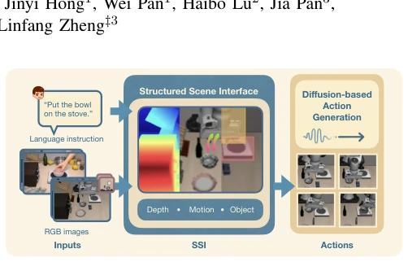
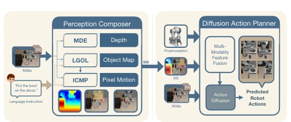
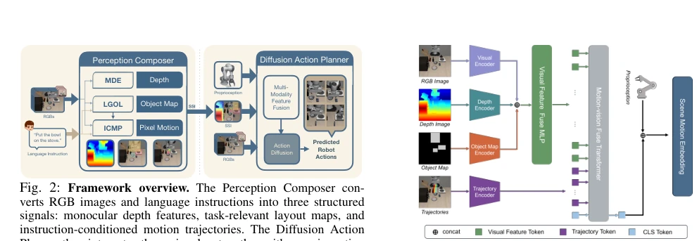
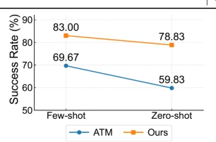
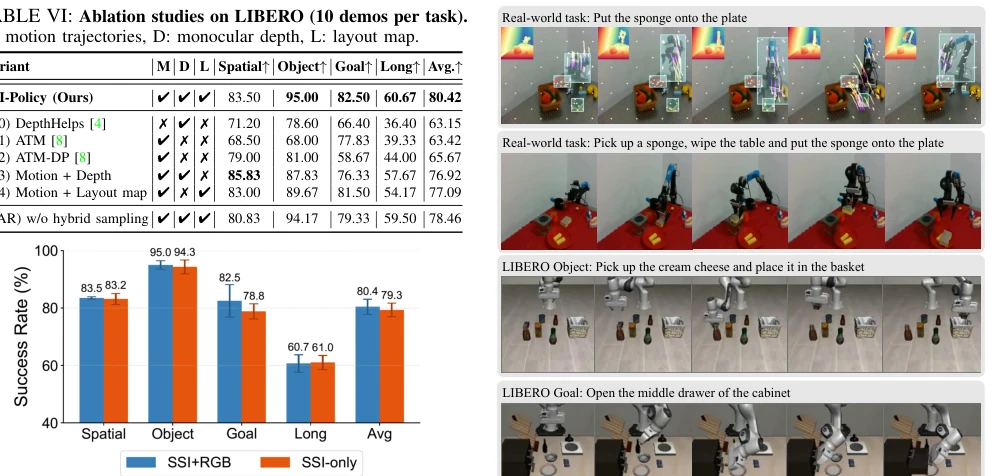
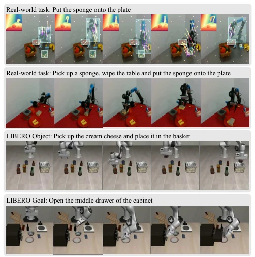
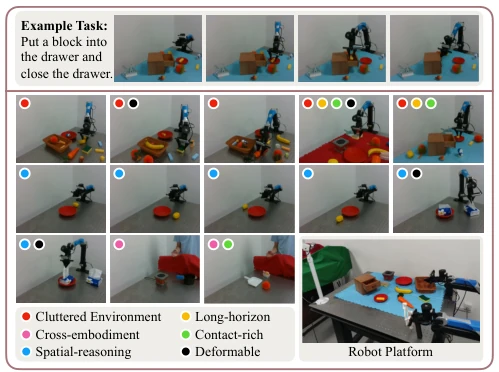

This paper introduces a "middle layer" business for embodied intelligence, termed SSI. Essentially, it packages depth, layout, and motion trajectories, feeding them into diffusion policies, claiming data savings and elimination of depth cameras. While this sounds appealing, a closer examination reveals depth relies on off-the-shelf Depth Anything V2, detection on Grounding DINO; the core innovation lies in "interface design" rather than "model architecture". On LIBERO, it indeed outperforms ATM-DP, but in the real world, once encountering soft objects or occlusion, if the detector fails, SSI becomes a "garbage interface". However, decoupling perception and control is indeed clever, enabling robots to "speak based on images" like humans before acting. The few-shot learning aspect is commendable, though over-reliance on pre-trained detectors renders generalization fragile, as the authors themselves admit temporal inconsistency leads to jitter.
Real-world manipulation requires spatial grounding and task reasoning, yet existing methods each have limitations. Video generation methods [1], [2] suffer severe geometric drift under long horizons and are computationally expensive; 3D methods [4], [5] rely on depth sensors, making generalization difficult; flow/trajectory interfaces [8], [9], [10] either implicitly encode geometry or require 3D anchor initialization. There is a lack of a unified RGB interface that can decouple perception and control. SSI-Policy aims to address spatial ambiguity and data scarcity in low-data regimes, achieving cross-embodiment transfer through a structured interface, reducing reliance on large-scale pre-trained data, and bridging the gap between RGB perception and task planning.

Fig. 1: Overview of SSI-Policy. From RGB observations and a language instruction, SSI constructs a structured intermediate in- terface that encodes monocular geometry cues, language-grounded object layouts, and instruction-conditioned motion trajectories. SSI is robot-agnostic (cross-embodiment) and can be learned from action-free videos alone (e.g., human-hand videos or robot videos). A diffusion policy is then trained from few robot demonstrations to generate actions conditioned on SSI, enabling data-efficient manipulation without depth sensors.
The overall framework consists of a Perception Composer and a Diffusion Planner. The perception end converts RGB and language into SSI, comprising three sub-modules: MDE uses Depth Anything V2 to extract relative depth features; LGOL uses Grounding DINO to generate language-guided object layout maps; ICMP predicts instruction-conditioned pixel trajectories, employing a mixed sampling strategy to cover both object and non-object regions. These three are fused into a structured scene interface. The planning end, DAP, fuses multimodal features and proprioception via a Transformer, inputs them into a diffusion model to generate action sequences, and adopts MSE loss for noise prediction. The key innovation lies in the robot-agnostic nature of SSI; the perception module can be pre-trained on actionless videos, while the control strategy requires only few-shot demonstration fine-tuning. This achieves decoupling of perception and control, reduces data requirements, and supports cross-embodiment transfer. This design allows downstream policies to focus on action generation without relearning geometry or language understanding, significantly enhancing few-shot learning capabilities.

Fig. 2: Framework overview. The Perception Composer con- verts RGB images and language instructions into three structured signals: monocular depth features, task-relevant layout maps, and instruction-conditioned motion trajectories. The Diffusion Action Planner then integrates these signals—together with proprioception and optional RGB inputs—to generate multi-step action sequences.

Fig. 3: Multi-modal feature fusion architecture. Per-view visual features (RGB, depth, layout map) are encoded with modality- specific CNNs and fused via an MLP. The resulting tokens, together with motion trajectory tokens, are processed by a Transformer. The output is concatenated with proprioception to form the condition vector for action diffusion.
On the LIBERO benchmark, with only 10 demonstrations per task, SSI-Policy achieves an average success rate of 80.42%, exceeding the strongest baseline ATM-DP by approximately 15%. It was validated on 13 real-world tasks, covering spatial reasoning, cross-embodiment transfer (human hand to robot), and contact-rich manipulation. Ablation studies indicate that geometric and motion cues are complementary; removing the mixed sampling strategy degrades performance. Despite relying on the perception module, it demonstrates robust performance in few-shot scenarios, even outperforming some external pre-trained methods with 50 demonstrations, proving the data efficiency advantage of the structured interface. Human-to-robot transfer experiments show that using only human hand videos can achieve a 40-45% success rate, which reaches 70-80% when combined with robot data.

Fig. 5: Cross-embodiment results on LIBERO-Spatial. Success rates under few-shot and zero-shot settings.

Fig. 6: Evaluating SSI as a policy interface. Success rates across LIBERO suites comparing the full model (SSI + RGB) with an SSI- only variant conditioned on SSI and proprioception.

Fig. 7: Qualitative snapshots of task executions. Each row shows frames from a single rollout. Top two rows: real-world experiments (with SSI overlays in the first row). Bottom two rows: simulated LIBERO tasks.
其他图片Other Figures

Fig. 4: Real-world setup and task suite. Top: time-lapse of a representative task. Middle/Bottom-left: representative scenes illustrating the diversity of the 13 real-world tasks, annotated with colored markers indicating task categories. Bottom-right: full view of the experimental platform, including the 6-DoF robotic arm and dual RGB cameras (side-view and eye-in-hand).